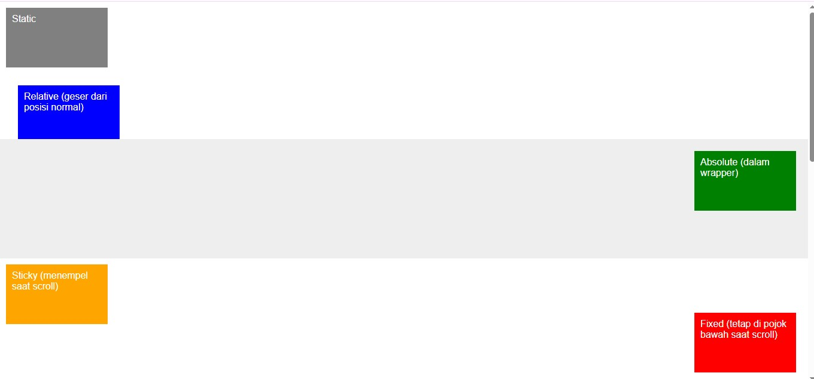

Apa itu CSS
CSS (Cascading Style Sheets) digunakan untuk mengatur tampilan elemen HTML. CSS memisahkan konten dari desain visual
Selector CSS
Selector digunakan untuk memilih elemen HTML yang ingin diberi gaya.
- Element Selector:
p { color: red; } - Class Selector:
.judul { font-size: 20px; } - ID Selector:
#header { background-color: blue; }
Properti Umum CSS
color: Warna teksbackground-color: Warna latarfont-size: Ukuran hurufmargin: Jarak luar elemenpadding: Jarak dalam elemenborder: Garis tepi elemen
Box Model
Setiap elemen HTML dapat dianggap sebagai kotak yang terdiri dari: margin, border, padding, dan content.
Positioning
static(default)relativeabsolutefixedsticky
Posisi elemen mengikuti alur normal dokumen
Elemen tetap pada posisi aslinya, tapi bisa digeser
Elemen keluar dari flow normal dan menempel ke elemen terdekat
Posisi tetap terhadap layar (viewport), tidak bergerak saat discroll
Gabungan antara relative dan fixed
Contoh Penerapan Positioning
Margins
Memberi jarak luar elemen. Bisa menggunakan nilai tunggal atau shorthand (top, right, bottom, left).
Padding
CSS memiliki properti untuk menentukan padding untuk setiap sisi elemen:
- padding-top
- padding-right
- padding-bottom
- padding-left
CSS Links
Mengatur tampilan link: normal, hover, visited, active.
a:link- tautan normal yang belum dikunjungia:hover- tautan saat pengguna mengarahkan mouse ke atasnyaa:visited- tautan yang telah dikunjungi penggunaa:active- tautan saat diklik
Display & Visibility
display: block | inline | inline-block | none- Block : Elemen mengisi lebar penuh dari parent-nya
- Inline : Elemen tidak memulai baris baru dan hanya sebesar kontennya
- Inline-Block : Tampil sebaris, tapi bisa diatur width, height
- None : Elemen tidak ditampilkan sama sekali
visibility: visible | hidden
Flexbox
Digunakan untuk membuat layout yang fleksibel.
Mengubah elemen menjadi flex container.
display: flex;
justify-content: center;
align-items: center;Media Queries
Digunakan untuk membuat desain responsif berdasarkan ukuran layar.
@media (max-width: 600px) {
body {
background-color: lightgray;
}
}